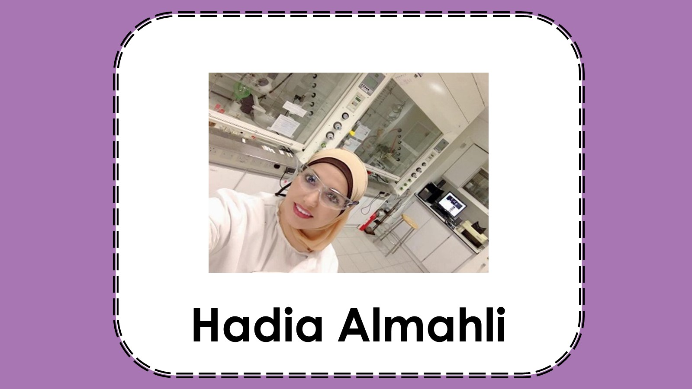
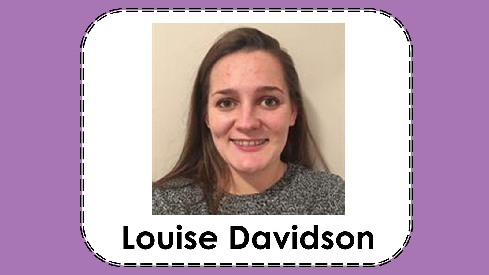

1 / 11

Aishwarya Padmanabhan is a PhD Student in the neuroscience group in the School of Life Sciences at the University of Sussex, working in the Alonso Lab where researchers use molecular biology, genetics, advanced microscopy & behavioural approaches to study how genes control the formation and function of the brain.
2 / 11

Dr Charanjit Kaur Khosa was at our virtual event last year and will now share her science in person on the seafront! Charanjit is a Particle Physicist, formally at the University of Sussex and now a lecturer at the University of Bristol. Charanjit’s research uses machine learning to study particle physics beyond the Standard Model, and in particular, dark matter.
3 / 11

Chiara De Lucia is a PhD Student at the University of Surrey and is working on a project about FLASH proton therapy. Her PhD project investigates the benefits of proton therapy in cancer treatment, using radiation doses delivered in short pulses at an ultra-high dose rate.
4 / 11

Dr Eleanor Jayawant is a Research Fellow in Laboratory and Computational Systems in biology, based in the Brighton & Sussex Medical School. Eleanor's recent focus has been on understanding the signalling networks in diffuse large B-cell lymphoma using computational models & lab experiments.
5 / 11

Dr Ana Filipa Moutinho is a Research Fellow based in the Evolution, Behaviour and Environment subject group in the School of Life Sciences at the University of Sussex. Filipa uses population genetics to study molecular evolution.
6 / 11

Dr Hadia Almahli
Chagas disease: how we can help as scientists?
Hadia is a Research Fellow in the School of Life Sciences at the University of Sussex, with expertise in medicinal chemistry and drug discovery. Hadia works on the development of drugs from natural products such as plants, and at last year's virtual event she spoke about how chemists can develop drugs from plants such as foxgloves.
7 / 11

Louise Davidson
Working together to save lives
Louise is a PhD student in the School of Psychology at the University of Sussex and for Health Security Agency. Louise's research looks at social identity and multi-agency emergency response, using simulations of emergency events to develop and test recommendations for managing major events.
- Profile - Twitter -
8 / 11

Dr Luana Olivieri is a Research Fellow in photonics (the use of light in technology) in the Department of Physics & Astronomy at the University of Sussex. She uses highly energetic laser beams to investigate nonlinear optical systems.
9 / 11

Poppy Joshi is a PhD Student in the Department of Physics & Astronomy at the University of Sussex, working in the Quantum Systems and Devices Group where she is studying advancing imaging systems of Bose-Einstein condensates microscopy.
10 / 11

Rosie Graham is a PhD Researcher the University of Portsmouth and the National Renewable Energy Laboratory, is currently studying at the Centre for Enzyme Innovation to characterise and engineer plastic degrading enzymes.
11 / 11

Dr Ruijie Wang is a psychology Lecturer in the Cyberpsychology Group at Bournemouth University, working on a Responsible Gambling Project studying the transparency of gambling websites. Ruijie investigates the design and development of interactive systems, applying machine learning to assess human behaviour from physiological information such as eye tracking.